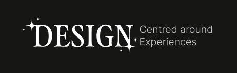

Hey! I'm Sumaya
New Zealand-based illustrator and designer, aiming to create human centred design with an experimentation driven processes.
My work is centred around helping guide and improve experiences for people visually and comprehensively. Rooted in meaningful experiences that go further than just visuals.
